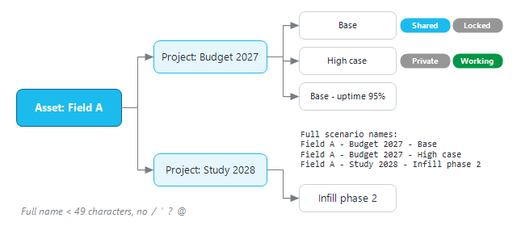
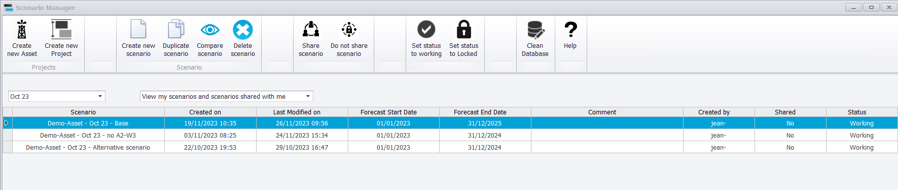
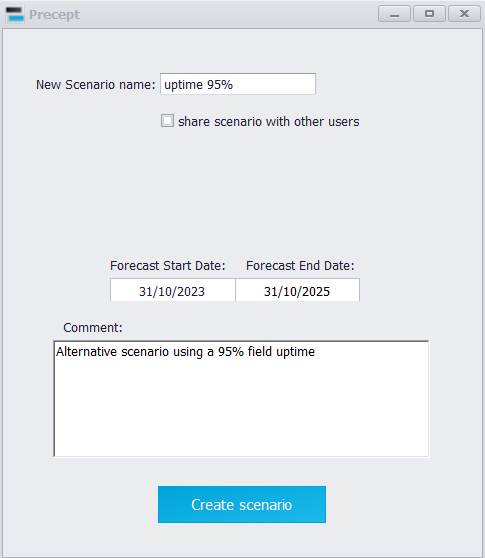

|
Scenario Management
1. Assets, projects and scenarios
Forecasting work in Precept is organised in three levels:
1.Asset: a field or group of fields. A user can work on one or several assets, depending on their access rights (see Security / Access policy). Production history, well trajectories and access rights belong to the asset and are shared by all its scenarios.
2.Project: a folder of scenarios inside an asset, for example one per budget cycle ("Budget 2027"). An asset can hold any number of projects.
3.Scenario: one complete set of forecast inputs (network, potentials, opportunities, sequences, shutdowns, settings...) together with the forecast results of its last run. A project can hold any number of scenarios.
The full name of a scenario combines the three levels: Asset - Project - Scenario, for example Field A - Budget 2027 - Base. The full name must be shorter than 49 characters (separators included) and must not contain the characters / ' ? or @.

Figure 1 - One asset, two projects and their scenarios, with the full scenario names.
2. The Scenario Manager window
Click "Scenario Manager" in the "Manager" group of the main ribbon (this needs the "Allow to create scenario" permission). Select the project in the list at the top left. The table lists the scenarios of that project that you created or that are shared, with the columns "Scenario", "Created on", "Last Modified on", "Forecast Start Date", "Forecast End Date", "Comment", "Created by", "Shared" and "Status". A Super User also has a list to switch between "View my scenarios and scenarios shared with me" and "View All scenarios".

The ribbon of the Scenario Manager contains:
•"Assets / Projects" group: "Create new Asset", "Create new Project".
•"Scenario" group: "Rename Scenario", "Create new scenario from scratch", "Import / Duplicate scenario", "Compare scenarios", "Delete selected scenario(s)".
•"Share scenario", "Do not share scenario".
•"Set status to working", "Set status to Locked".
•"Export scenario to Excel", "Import scenario from Excel".
•"Help": opens the user manual.
If no asset is selected in the main window, only "Create new Asset" is available; if the asset has no project yet, create one first. Most commands close the Scenario Manager and open a small dialog; the main window refreshes its lists when the action is complete.
3. Creating assets and projects
3.1 Create new Asset
1.Click "Create new Asset", type the name in "Asset:" and click "Create Asset". A name that already exists is refused ("The Asset already exists !").
2.Precept confirms with "New Asset successfully created !". The new asset starts from your company's default asset configuration, and you are given access to it with every permission. Other users must be added in the "Security" window (see Security / Access policy); Super Users see it automatically.
By default, the production history of a new asset is uploaded to and stored in the Precept database. A direct connection to your production allocation database is configured by Cleverfield (see Architecture).
3.2 Create new Project
Click "Create new Project", type the name in "Project :" and click "Create Project". Precept confirms with "Project successfully created !" and selects the new project in the Scenario Manager. The name must be unique within the asset.
4. Creating a scenario
4.1 Create new scenario from scratch
1.Select the project, then click "Create new scenario from scratch".
2.Type the "New Scenario Name :" (only the last part; the asset and project are added automatically).
3.Enter the "Forecast Start Date:" and "Forecast End Date:". They are pre-filled with the first day of the current month and 31 December five years later.
4.Optionally tick "share scenario with other users" and type a "Comment:".
5.Click "Create scenario". Precept confirms with "Scenario successfully created !".

A new scenario starts from your company's empty template and has the status "Working". A name already used in the project is refused ("The scenario already exists! Please choose another name.").
4.2 Duplicate a scenario
Duplicating is the usual way to build a variant: copy the base case, change one input, run, and compare. There are two ways:
•Duplicate the scenario that is open: click "Duplicate scenario" in the "Manager" group of the main ribbon. The "Duplicate as:" box is pre-filled with the current scenario name followed by " -"; complete it, optionally tick "share scenario with other users" and add a comment, then click "Duplicate scenario".
•Duplicate any scenario: in the Scenario Manager, select the target project and click "Import / Duplicate scenario". Under "Duplicate From :", choose the source asset (any asset you have access to), project and scenario; type the name in "Duplicate as:" and click "Duplicate scenario". The copy is created in the selected project of the current asset.
What is copied to the new scenario:
•All forecast inputs: asset model, network diagram, initial constraints, constraints vs time, reporting nodes and rerouting, potentials (decline curves), new profiles and conversions, opportunities, sequences, shutdowns, settings (including the forecast dates), PVT, transient and pattern data, hydrocarbons in place, OPEX, GHG and export inputs, probabilistic inputs.
•Material balance data: reservoir properties, well inflow, PVT for material balance, relative permeability and pipeline lift curves.
•3D and simulation inputs: the 3D model builder deck, its rock-curve, contour and uncertainty data, its grid map, and the simulator well controls.
What is not copied: the forecast results (run the new scenario to get them) and the scenario's history log (the new scenario's log starts with "The scenario is a duplicate from ..."). The new scenario is created with the status "Working", you as "Created by", and the sharing you chose in the dialog.
5. Renaming a scenario
1.In the Scenario Manager, select one scenario (one only) and click "Rename Scenario".
2.The current name is shown under "Rename from :". Type the new name in "Rename as:" and click "Rename scenario". Precept confirms with "Scenario successfully renamed !".
Renaming keeps everything: inputs, results, log and network diagram are moved to the new name.
6. Sharing and locking
Select a scenario in the table, then use the buttons below. They are active only for the scenario's creator and for Super Users; for anyone else Precept answers "You cannot modify the status since you didn't create that scenario."
•"Share scenario" / "Do not share scenario": make the scenario visible, or not, to the other users of the asset (column "Shared").
•"Set status to Locked" / "Set status to working": freeze the scenario, or release it (column "Status"). When a locked scenario is opened, Precept shows "This scenario is locked and cannot be edited !": its inputs cannot be changed and it cannot be re-run, but its results can still be viewed and exported. Lock a scenario once it has been approved, for example as the official budget case.
Example: user B can modify a scenario created by user A only if user A has shared it, its status is "Working", and user B has the permission "Allow to edit others scenario" (see Security / Access policy).
7. Comparing two scenarios
"Compare scenarios" finds the input differences between two scenarios of the current asset, for example to check what changed between a base case and its duplicate.
1.In the Scenario Manager, click "Compare scenarios". The "Compare Scenarios" window opens.
2.Choose "Scenario 1:" and "Scenario 2:" (scenarios you created or that are shared) and click "Compare".
3.The category buttons with at least one difference turn blue: "Initial constraints", "Constraints changes", "Opportunities", "Conversions", "Shutdowns", "OPEX", "GHG", "Probabilistic". Click one to list its differences: the item (node, well, opportunity...), the "Parameter" that differs, and its value in each scenario. An item that exists in only one scenario is reported as "Not present in Scenario ...".
4.The labels "Sequence1", "Sequence2"... show each sequence of events in green when it is identical in both scenarios, and in red when it differs. Select the sequence in the drop-down list to display both versions one above the other.
The comparison covers inputs, not results. Decline-curve potentials are not compared (the "Potentials" button never turns blue): check them in "Decline Curves". To compare forecast results, display both scenarios' results (see Forecast results).
8. Exporting and importing a scenario with Excel
Use these commands to move a scenario to another Precept database (for example between two companies' installations) or to archive it.
•"Export scenario to Excel": select one or more scenarios (full rows) and click the button; a file name is asked for each one. The workbook has a "Scenario" sheet with the asset, project and scenario name, and one sheet per type of data: the scenario's inputs and the asset data needed to rebuild it. The export is meant for inputs: run the forecast again after importing.
•"Import scenario from Excel": choose a workbook made by "Export scenario to Excel". Precept creates the asset and the project if they do not exist, then loads the scenario under its original name. If a scenario with that name already exists, the import stops: "The scenario already exists! Please delete existing scenario first before importing."
9. Deleting scenarios
1.In the Scenario Manager, select one or more scenarios (click the row headers; hold Ctrl or Shift for several).
2.Click "Delete selected scenario(s)". For a single scenario Precept asks "Are you sure you want to delete the scenario '...' ?". When several scenarios are selected, they are deleted without further confirmation, then "The scenarios have been deleted !" is shown.
Deletion is permanent. It removes the scenario's inputs, all its forecast results, its 3D model-builder map and its network diagram. The analogue / type-curve library of the asset is kept. Only the creator of a scenario or a Super User can delete it; for anyone else Precept answers "You cannot delete the scenario ... since it was created by another user !". When the last scenario of a project is deleted, the empty project is deleted too (except a project named "Master").
10. Keeping the database small
Forecast runs generate a lot of data, and a large database is slower for everyone. Delete the scenarios you no longer need: deleting a scenario removes its results as well as its inputs. Lock, rather than keep duplicating, the scenarios that must be kept for reference. If the database still grows abnormally, contact Cleverfield support (support@cleverfield.fr) for a clean-up of orphan data.
|